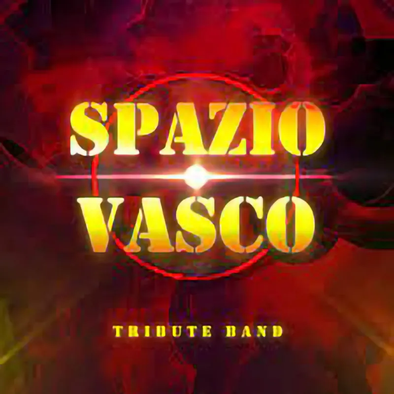

Spazio Vasco
La tribute band SPAZIO VASCO nasce nel 2013 dall’idea di mettere insieme un gruppo di amici musicisti, tutti uniti dalla sconfinata passione per il grande Vasco Rossi. La band, da subito, ha riscosso grande apprezzamento sul palcoscenico e questo, senza dubbio, grazie alla meticolosità con la quale viene proposto il live-show. In poco tempo SPAZIO VASCO è divenuta una tribute band di riferimento per moltissimi appassionati e la voglia di esprimere tutta la passione, l’amicizia e il divertimento sono l’elemento chiave, imprescindibile, che unisce e avvicina tutti…anche i meno giovani. Moltissimi gli apprezzamenti, soprattutto dagli addetti ai lavori, ma nonostante le soddisfazioni raccolte, l’impegno è quello di migliorare sempre ed essere sempre carichi, sempre al “massimo” ogni volta che si sale sul palco! SPAZIO VASCO vanta collaborazioni con i musicisti di Vasco Rossi, infatti, sono all’attivo spettacoli con Alberto Rocchetti (tastierista di Vasco Rossi), con Claudio Golinelli, il Gallo, (bassista di Vasco Rossi), con Andrea Braido (Chitarrista di Vasco) e con Andrea Innesto (Cucchia) che con il suo Sax ha accompagnato Vasco Rossi in molti Tour e spettacoli dal vivo. Molte le piazze, indimenticabili serate… ognuna speciale, ognuna dal sapore unico. Da non dimenticare quando la band si è esibita in occasione della festa del Frosinone calcio, all’interno dello stadio “Matusa” davanti a circa 15.000 spettatori. “Nella musica di Vasco vogliamo trasmettere le emozioni che ci fanno vibrare l’anima”.
www.spaziovasco.it